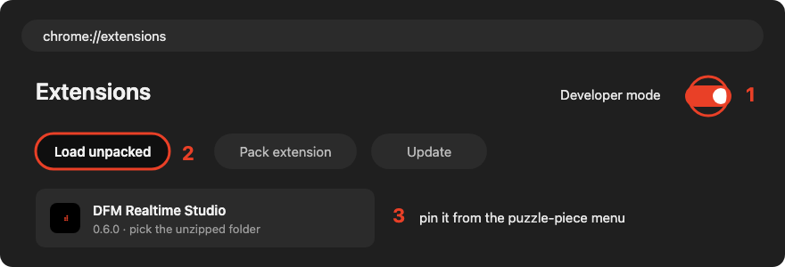
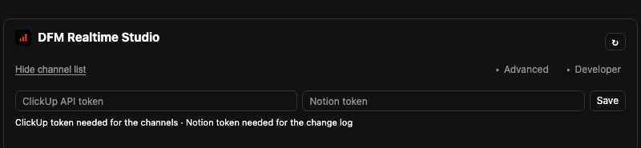
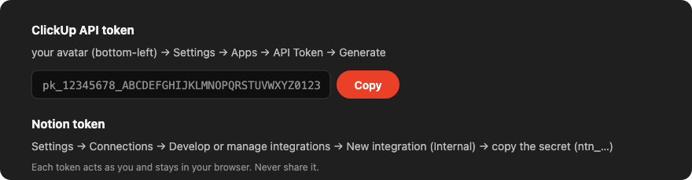
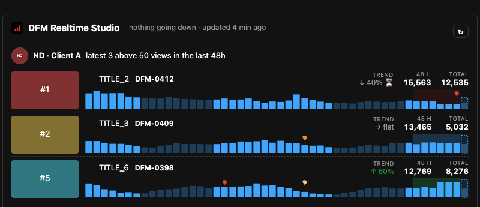

DFM Realtime Studio
Realtime views, trends, A/B tests and title/thumbnail changes for our client channels, plus the packaging card inside YouTube Studio.
Once the admin has applied the policy the extension installs and updates by itself. Nothing to do — skip to Setup.
Manual install (until the policy is in place)
Download and unzip
Put the unzipped folder somewhere you will keep it — not Downloads.
Download dfm-realtime-studio.zipLoad it in Chrome
Open chrome://extensions, switch on Developer mode, click Load unpacked, pick the unzipped folder, then pin the icon from the puzzle-piece menu.

Updating later
Download the zip again, unzip over the same folder, press the reload arrow on chrome://extensions. The managed install does this by itself.
Setup (once)
Paste your two tokens
Open the extension, paste both tokens, press Save. They act as you and never leave your browser.

Where the tokens come from
ClickUp API token — ClickUp → your avatar → Settings → Apps → API Token → Generate → copy (pk_…).
Notion token — Notion → Settings → Connections → Develop or manage integrations → New integration (Internal) → copy the secret (ntn_…), then share the DFM Realtime Studio page (the one with the two databases) with that integration.

Add your channels
Your client channels appear from the ClickUp Client Database. Press Add on the ones you follow. Each shows its latest long-form videos with realtime views, trend and changes.

Questions → Mohamed. Admin details on the admin page.